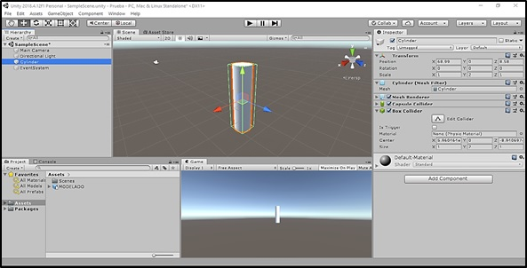
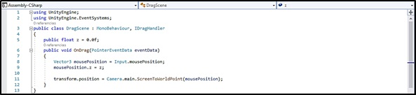
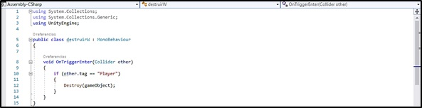
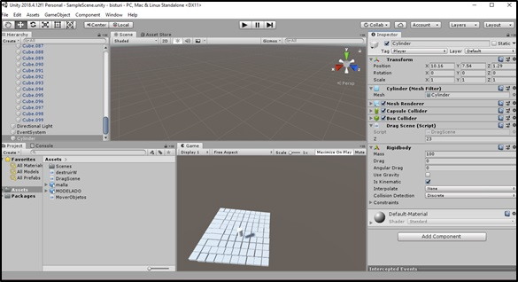

En el documento actual se detalla la actividad que se hizo en la semana 12. También se explicará sobre una herramienta importante al momento de elaborar una simulación en realidad aumentada, esta herramienta es llamada: Unity.
En esta semana, se continuó realizando el cuarto paso (Prototipar) del Design Thinking. El objetivo del proyecto es realizar una simulación del desbridamiento quirúrgico de heridas por quemadura mediante la realidad aumentada. Para crear esta simulación se hizo uso de Unity.
Unity es un motor de videojuego, este presenta herramientas múltiples que permiten una edición e iteración rápidas en tus ciclos de desarrollo, lo que incluye el modo Play para tener vistas previas rápidas de tu trabajo en tiempo real. (1) Si bien Unity es un motor de videojuegos esta plataforma puede crear simulaciones en realidad aumentada con ayuda de una librería llamada Vuforia. Sin embargo, ¿cómo se puede crear una simulación 2d y 3d? Para poder responder esta pregunta es necesario conocer las diferentes funciones que te ofrece Unity. El objetivo del proyecto es generar una simulación del desbridamiento quirúrgico, al pasar el bisturí diseñado sobre el modelado de la herida 3d se desbrida una capa de la herida por quemadura. Para crear esta simulación se realizo los siguientes pasos: 1. Se abre la Interfaz de Unity, se crea un objeto 3D (cilindro, cubo, esfera, etc.) se le añade en la ventana “Inspector” el componente “Box Collider”. Luego en la ventana “Sample Scene” se hace clic derecho se va a UI y dentro de ellos se apreta la función “EventSystem”.  2. Luego en la ventana “Assets” se crea un C# Script. Al hacer doble clic en el archivo creado este se abre en Microsoft Visual Studio. Y se pone el siguiente código:  3. Guardamos el archivo Script y luego de ello lo agregamos como componente en la carpeta “Inspector” del objeto 3D previamente creado. Con ello ya podemos mover el objeto 3D en la simulación (mientras se mantiene apretado el clic izquierdo del mouse). 4. Luego de ello exportamos de Blender una malla de cubos. Creamos otro archivo Script y se pone el siguiente código:  5. Agregamos como componente el script hecho al cubo o a los cubos que se quiere eliminar. Añadimos en el cilindro el componente “RigidBody” y usamos la opción “Is Kinematic” este con la función de que el cilindro se mantenga fijo. 
1. 1. 2D 3D software for animation, rendering, & simulation - game engine for AR/VR | Unity [Internet]. [cited 2019 Nov 23]. Available from: https://unity3d.com/unity?_ga=2.114181383.1802142356.1574463729-597160580.1573849462